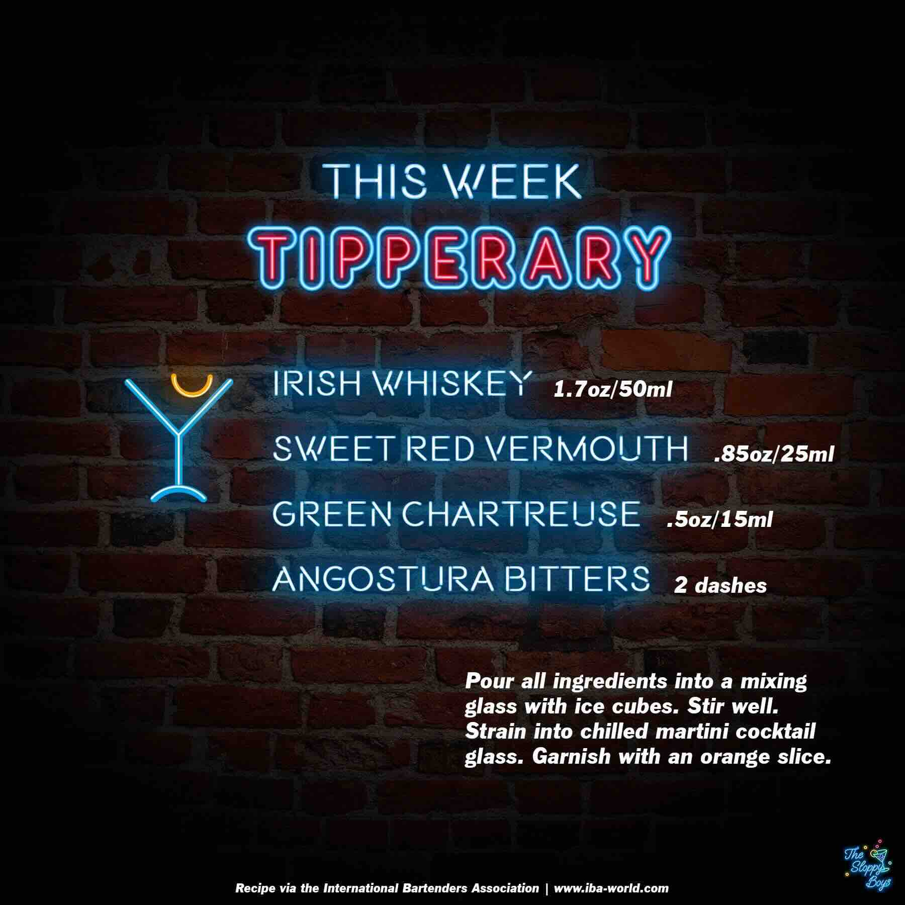

Tipperary
Ingredients
- Irish Whiskey (1.7oz/50ml)
- Sweet Red Vermouth (.85oz/25ml)
- Green Chartreuse (.5oz/15ml)
- Angostura Bitters (2 dashes)
Steps
- Pour all ingredients into a mixing glass with ice cubes.
- Stir well.
- Strain into a chilled martini cocktail glass.
- Garnish with an orange slice.
Notes